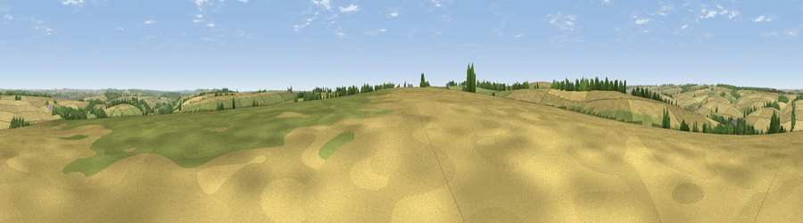

Viewpoint near Coombe Bissett
#25059 in England · top 31% of its area beats it · near Coombe BissettWhere it is
The exact computed spot (SU 10025 25425). Click the marker for map links.
The view, rendered

A 360° render of this exact spot computed from the terrain model, tree cover and land cover — summer colours, afternoon light, calibrated against photographs of famous viewpoints. Real trees, hedges and buildings will differ in detail.
The panorama
Grey silhouette: terrain skyline in each direction (720 bearings, Earth curvature and refraction included). Dashed green: skyline with trees (+15 m) and buildings (+8 m) as obstacles. Blue strip: how far the ground is visible on each bearing.
Where the view opens
Wedge length = distance to the farthest visible ground on that bearing (vegetation-aware). Rings at 10, 25 and 50 km.
What fills the view
68% cropland · 24% grassland · 7% woodland · 1% built-up
Angular shares of the visible panorama (visual magnitude), not map area. Landscape diversity 0.36 (0–1 Shannon).
Key numbers
More beautiful places nearby
The staircase of upgrades: each row has a higher view potential than everything closer. Driving times are estimates from straight-line distance, calibrated against real road routing — check an actual route before setting out.
| Place | Direction | Drive | Score |
|---|---|---|---|
| Viewpoint near Coombe Bissett | S · 1 km | ~2 min | 49.9 |
| Viewpoint near Bishopstone | WSW · 2 km | ~6 min | 54.7 |
| Bishopstone Down | NW · 5 km | ~11 min | 57.6 |
| Hydon Hill | WNW · 7 km | ~14 min | 61.2 |
| Marleycombe Hill | WSW · 8 km | ~16 min | 63.3 |
| Viewpoint near Martin | SW · 10 km | ~19 min | 64.6 |
| Viewpoint near Cranborne | SW · 11 km | ~20 min | 65.0 |
| Trow Down | WSW · 13 km | ~24 min | 67.5 |
51.02811, -1.85842 · source: screening · position refined by local search. Computed location — check access rights before visiting.